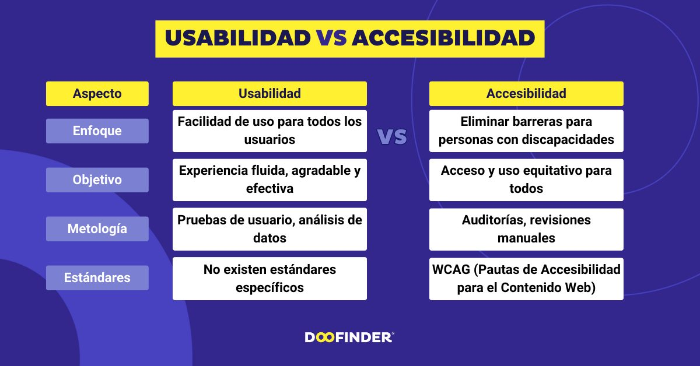
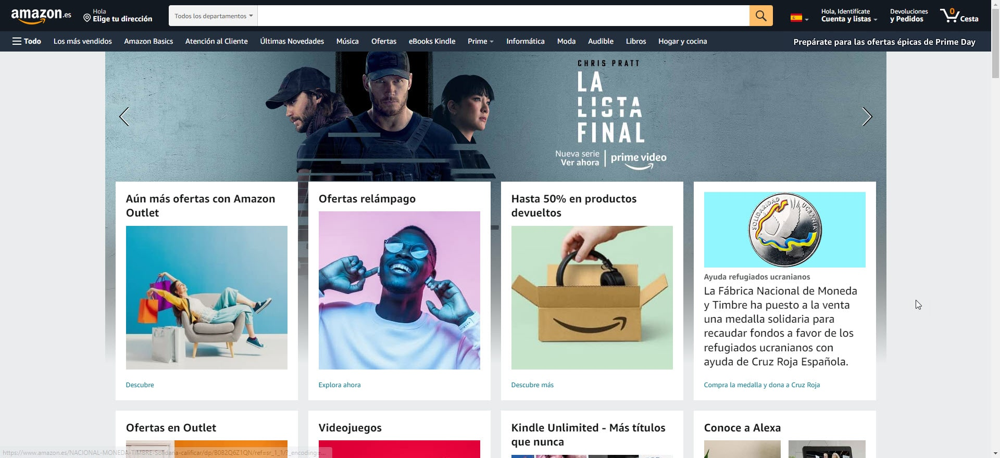
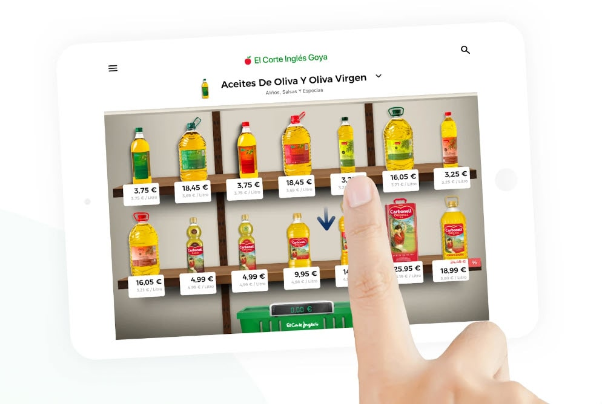
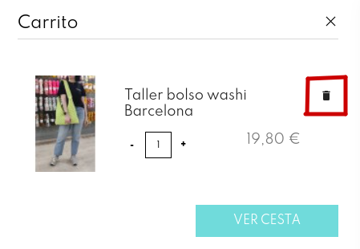

User Experience
Aquest tutorial es centra en principis, bones pràctiques i eines per optimitzar l'experiència de l'usuari (UX) en un lloc web.
Tutorial d'Usabilitat Web
Introducció a l'Usabilitat Web
L’usabilitat web fa referència a la facilitat amb què els usuaris poden navegar i interactuar amb un lloc web. Un bon disseny d’usabilitat implica:
- Eficiència: L’usuari aconsegueix els seus objectius ràpidament.
- Eficàcia: Els usuaris completen les tasques sense errors.
- Satisfacció: L’experiència és agradable i sense frustracions.
De vegades confundim usabilitat en accesibilitat, vegem en que es diferèncien:

Principis Clau d'Usabilitat
Principis
No hi ha una guia estandaritzada dels principis d'accessibilitat i usabilitat, per tant mostrem alguns dels exemples més habituals i de sentit comú.

Claredat
- Utilitza llenguatge senzill i comprensible.
- Organitza la informació de manera lògica.
- Evita l'excés d'informació en una sola pàgina.
Consistència
- Mantingues els mateixos colors, tipografies i estils al llarg del lloc.
- Les accions repetitives (com navegar o enviar formularis) haurien de tenir el mateix comportament en totes les pàgines.
Accessibilitat
- Assegura que el lloc web siga navegable per a persones amb discapacitats.
- Exemple: Text alternatiu (alt text) per a imatges.
- Compatibilitat amb lectors de pantalla.
- El contrast entre text i fons ha de ser suficient per a facilitar la lectura.
Retroalimentació
- Proporciona respostes clares a les accions de l’usuari.
- Exemple: Una notificació quan un formulari s’envia amb èxit.
- Evita els errors oferint suggeriments (exemple: “El correu electrònic no sembla vàlid”).
Navegació Senzilla
- Menús clars i accessibles des de qualsevol pàgina.
- Botons de crida a l'acció (CTAs) visibles i intuïtius.
Bones Pràctiques
Temps de Càrrega
- Optimitza les imatges i els vídeos.
- Redueix la càrrega de JavaScript i CSS innecessaris.
- Utilitza una xarxa de distribució de contingut (CDN).
Responsivitat
- El lloc ha de funcionar bé en tots els dispositius (ordinadors, tauletes, mòbils).
- Implementa el disseny adaptatiu (media queries en CSS).
Formularis Optimitzats
- Limita el nombre de camps obligatoris.
- Proporciona etiquetes clares i ajuda contextual.
- Indica els errors específics quan un camp és incorrecte.
Enllaços i Botons
- Evita els enllaços trencats.
- Assegura que els botons són fàcils de fer clic, especialment en pantalles tàctils.
Eines per Millorar l’Usabilitat
Anàlisi i Proves
- Google Analytics: Per analitzar el comportament dels usuaris.
- Hotjar: Mapes de calor i seguiment de clics.
- Crazy Egg: Per visualitzar patrons d’interacció.
Proves d'Usuari
- Recopila feedback directe mitjançant proves amb usuaris reals.
- Utilitza eines com UserTesting o Maze.
Auditoria d’Accessibilitat
- Wave: Per comprovar problemes d’accessibilitat.
- Lighthouse (Google Chrome): Per avaluar la usabilitat i el rendiment.
Passos per Crear un Lloc Web Usable
- Investigació d’usuaris:
- Entén el perfil dels teus usuaris.
-
Defineix els seus objectius i problemes.
-
Wireframes i prototips:
-
Crea esbossos del lloc web abans de codificar-lo.
-
Disseny iteratiu:
-
Testeja, millora i torna a testejar.
-
Mesurament continu:
- Analitza les mètriques i ajusta segons el comportament real.
Exemples de bones i males pràctiques
Botiga online El Corte Inglés
Els usuaris estan familiaritzats en un sistema més o menys comú de botigues on-line, com per exemple aquest:

En aquest cas, El Corte Inglés va intentar trencar aquesta estructura de navegació i va apostar per una rèplica de navegació tal i com la tenen en la vida real en els seus supermercats. El resultat va ser que la majoria d'usuaris abandonava la pàgina en no saber navegar i trobar els productes.

Icones i consfusions
Has d'intentar evitar confusions entre els usuaris i que la informació siga clara i fàcil d'interpretat. Per exemple el següent esquema d'icones per a uns WCs dels que s'utilitza hui en dia no es recomana per a una web, ja que no aporta informació clara.
Per contra, les icones amb una paperera per a esborrar si que aporten informació clara.

Imitació de gestos
També es poden fer usos de gestos intuitius, com per exemple en aquest cas que sacsejar implica desfer l'acció.